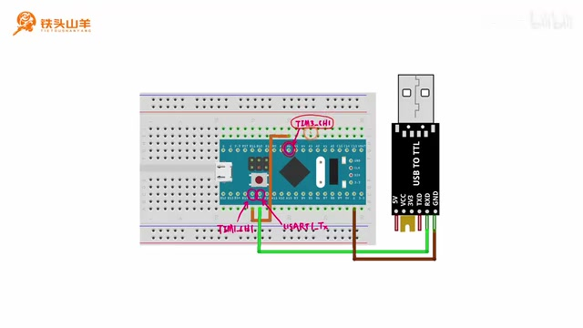
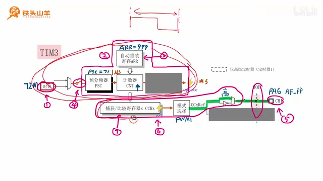
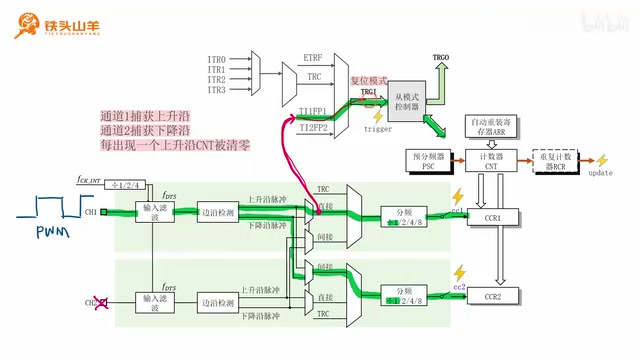
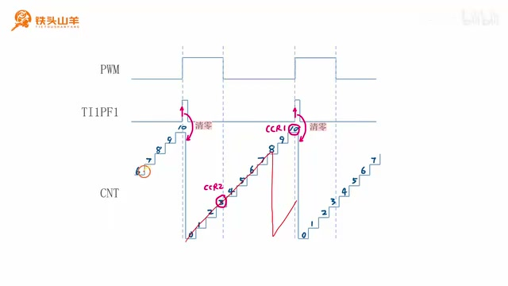
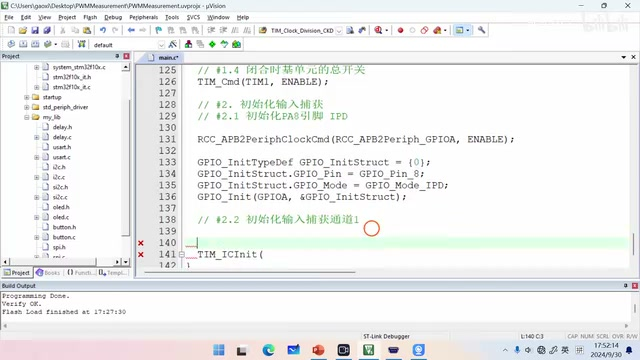
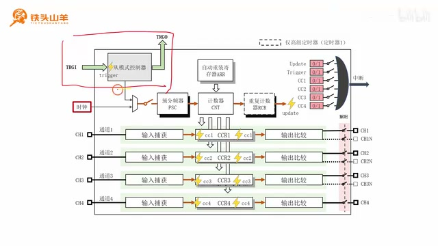
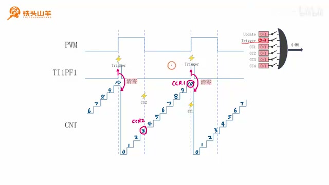
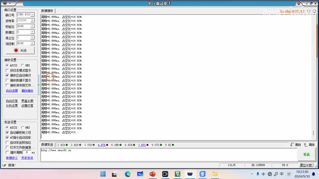

P048 · 9.9 （定时器）PWM参数测量实验¶
各位同学大家好，我是铁头山羊，今天我们来学习第九章的第九节，在上期视频的过程中呢，我已经详细的给大家介绍了如何使用定时器的。
从模式控制器，再加上输入捕获，来测量这个PWM参数的一个原理，包括去测量这个PWM的周期，还有这个占空比。
那本期视频呢我们就来做一个PWM参数，测量实验，首先我们先来看一下本节课的一个安排，本节课呢我们分成这么六个部分来讲，本次实验的一个基本的原理。
然后第二部分呢我们使用另外一个定时器呢，去产生一个PWM 信号，这个PWM 信号呢是一个待测信号，然后第三部分我们去初始化定时基单元，第四部分我们去初始化输入捕获。
第五部分我们去初始化操模式控制器，做完这三部分的初始化之后，第六部分呢，我们就正式开始测量这个PWM的参数，下面呢我们从第一部分开始。
首先我们先来介绍一下，这个实验的一个基本原理，我们先来明确一下本次实验的目的，本次实验的目的呢就是去测量PWM信号的参数，对吧。
要想测量这个PWM信号的参数，我们得先有一个待测的 PWM 信号，所以我们使用了这个TIM3的通道 1，去产生一个待测的PWM信号，然后呢。
我们再把这个PWM信号呢，输入到另外一个定时器里，比如说我们使用这个TIM1，我们把这个PWM 信号呢输入到TIM1的通道 1，然后我们再根据上期视频所讲的这个原理。
使用这个TIM1的，从模式控制器加上这个输入捕获的通道 1，和通道 2一起去测量这个PWM 信号的参数，测量完之后呢，我们会得到PWM 测量结果。
包括这个周期和占空比，然后我们再通过USART1这个模块，把这个测量的结果呢发送到电脑上，然后我们再用这个串口调试助手，把这个结果显示出来。
我们显示两种参数哈，分别是这个周期和占空比。
实验原理与连线¶
介绍完这个实验的基本原理之后。

电路示意图标出 TIM3_CH1（PA6）到 TIM1_CH1（PA8）的待测信号连接，以及 USB 转 TTL 模块。 · 原片 02:12
我们就得到了这么一张电路图哈，我们来看在这张电路图里，这个PA6呢就表示TIM3的通道 1，我们要使用这个TIM3的通道 1呢，去产生一个待测的PWM信号。
然后呢我们再把这个产生的PWM的待测信号呢，接到这个TIM1的通道 1，这个TIM1呢，负责对这个PWM的参数进行测量，然后我们再把这个测量的结果呢。
通过这里的USB 转 TTL 模块给它发送到电脑上，这个就是我们本次实验的一个最终的电路图，我们按照这个电路图呢去连接我们的电路，我们来看一下接好线之后的这个电路，这个电路呢其实非常简单。
我们只需要用这个TIM3的通道 1，也就是PA6去连接这个TIM1的通道 1，也就是PA8，然后呢这里产生PWM信号啊，这个PA8呢测量这个PWM信号。
我们用中间的这个蓝色的线把它连起来，就可以了，那除此之外呢，我们还需要连接这个USB转TTL模块，由这个USB转TTL模块呢。
把我们测量的这个结果呢发送到电脑上，除此之外我们不要忘记去连接这个调试器哈，连好之后，我们就把这个USB 转 TTL 模块，还有这个调试器给它一块插到电脑上就可以了。
USART1 初始化与串口验证¶
首先呢因为本次实验我们需要使用到串口，向电脑发送数据，对吧，所以呢我们需要对这个串口进行初始化，那本次实验呢我们使用的这个串口呢是USART1，所以我们需要对这个USART1 进行初始化。
那这个USART 模块初始化的步骤呢，主要分成两大步，首先第一大步就是去初始化，这里的这个IO引脚，然后第二大步呢才是去初始化这个USART 模块。
本身，我们先来看一下这个IO引脚的初始化，由于本次实验呢，我们只需要通过这个串口向外发送数据，对吧，所以呢这两个引脚。
其实我们只需要初始化这个TX 引脚就够了，我们这个USART1 的TX 引脚呢，位于我们单片机的这个PA9上，我们需要把这个PA9呢设置成AF_PP，也就是复用推挽输出模式。
现在呢请同学们拿出我们的这个模板工程，然后我们对这个模板工程先进行解压，解压到当前文件夹，那么我们就获得了这么一个工程的文件，对吧，然后我们对它进行重命名。
我们叫PWM Measurement吧，起这么一个名字，然后我们给他改完名字之后，给我们的这个工程文件呢也重新起名字，给上面的这个文件呢。
也重新起这么一个相同的名字，现在呢我们双击打开这个工程，然后我们在左边的这个导航栏里面呢，找到我们的这个main点C文件，我们需要把这个代码呢。
写到这个ma点C文件里边，首先我们需要写的这个函数呢，就是啊USART1 的初始化，所以呢我们给它起这么一个名字，然后我们在这个初始化里面呢。
刚才我们说了分成两大步，对吧，第一大步呢就是去初始化IO引脚啊，因为我们只需要发送数据，所以我们只需要把这个PA9初始化成AF，PP这个模式就可以了。
下面我们来写一下这段代码哈，首先我们先开启这个GPIOA的时钟，这样呢我们这个GPIOA 的时钟就开起来了，然后呢我们再声明一个这种结构体类型的变量，这个变量声明好了。
我们再给这个变量里面的成员赋值GPIO_Pin呢，我们填GPIO_Pin_9，GPIO_Mode呢，我们刚才说的是AF_PP，对吧，然后还有这个speed。
这个速度呢我们随便指定一个速度啊，这不是特别高，两兆也行，十兆也行，写个十兆吧都可以。
然后我们再调用这个GPIO_Init对PA9进行初始化。
这样呢，我们这个串口的TX 引脚的初始化就写完了，初始化完这个L引脚之后呢，下一步我们就是对USART 模块本身进行初始化，这个初始化的步骤呢可以分成三个小步。
首先第一个小步，就是去开启我们USART 模块的时钟，只有我们先开启了这个模块的时钟，我们后续的操作呢才能是有效的，然后第二步呢。
就是对这个USART 模块的一些参数进行配置，包括这个数据帧的格式以及这个波特率的值，还有这个数据收发的方向，然后第三步呢就是闭合这里的总开关，让这个USART 模块呢开始工作。
下面呢我们就按照这三个小步骤啊，来写一下我们的代码，第二步初始化USART1 模块，第2.1步配置USART啊，不是是开启USART1 模块的时钟。
我们调用RCC_APB2PeriphClockCmd，RCC_APB2PeriphClockCmd(RCC_APB2Periph_USART1, ENABLE)哎，来开启它的时钟。
这样呢这个时钟就开起来了，然后我们再来看第二小步，第二小步才是配置USART1 的参数，我们需要调用这个user init这个方法，来配置这个USART1 的参数。
然后对于USART_Init这个方法来说，它第二个参数呢是一个结构体类型的，所以呢我们先用这个结构体的类型，去声明一个变量，这个变量呢就是这种类型的。
然后，这里需要注意哈，我们之前的时候用结构体声明这种变量，类型的时候呢，我们都没有给这个结构体赋初值。
这样呢很有可能会导致一些错误，所以我们最好给它赋一些初值，包括我们上面所写的这个GPIO_Init，这个代码，我们这里不是也声明了这么一种变量吗。
我们也得给它赋一个初值，不赋初值的话，很有可能会报错，就是会出现一些莫名其妙的错误。
那我们给他赋初值呢，这是一个非常良好的编程习惯，以后大家写这个代码的时候，一定要给这个结构体赋初值哈，然后我们对这个结构体里面的成员进行初始化。
波特率呢我们选115200，硬件流控呢我们不使用硬件流控，模式这个模式呢其实是数据通信的方向，我们只需要发送数据，不需要接收数据。
所以我们这里填TX就可以了，然后这是这个校验方式呢，我们不使用校验，再往后就是这个停止位的长度，我们使用一位停止位。
还有就是这个数据位的长度，我们用八位数据位，这样所有的参数都设置完成之后，我们就调用这个USERINIT对啊，UIT1进行一个初始化。
这样就初始化完了，然后第三小步就是闭合总开关，也就是调用这个user杠CMD，嘿来闭合一下这个总开关，让我们的这个串口工作起来。
那这些代码写完之后，我们就把这个初始化的代码呢，放到main方法里面去调用一下，也就是放在第一行这里去调用，然后调用完成之后。
我们这个USART 模块是不是就初始完了，下面呢我们希望测试一下，这个USART 的初始化是不是正确的，所以呢我们想发送一个hello world的一行字符串，来测试一下。
我们找到这个my lab哈，我们之前写了一个us点H这么一个头文件，对吧，我们之前的那些啊字符串的发送的函数呢，都在这个U大点H这个头文件里，所以我们先引用这个头文件。
然后我们就调用我们之前写的那个my user，比如说调用send string吧，还是调用这个send string哈，我们发送一个hello world啊，这不发送hello world了。
发送你好，世界。
然后呢我们这个代码就写完了，我们按左上角的第二个按钮进行编译，没有错误也没有警告，然后我们按这个按钮把它下载到单片机当中，好需要把这个调试器插到电脑上哈。
刚才没有插，把这个USB转TTL模块也插到电脑上，然后按下载，这样呢我们这个代码就下载到单片机里了，现在呢咱们打开这个串口调试助手。
然后我们设置一下串口调试助手的参数，首先呢设置一下这个串口号，然后呢波特率115200，剩下这些参数呢都不用变，就是它跟我们单片机上的这些参数是一样的。
然后我们按这里的打开按钮，把这个串口给它打开，这里有一堆乱码哈，我们把它清掉，然后这个接收设置呢使用这个ask。
ask也就是以字符的格式去接收，因为我们刚才写程序的时候显示的是你好世界，这是汉字，对吧，这个汉字呢他使用的这个字符集编码格式呢，我们来看一下。
他使用的是，edit点击edit，点击configuration，它使用的是这个UTF杠八的这个编码格式，所以呢我们在这个串口调试助手里边。
应也应该设置这个UTF杠八的模式，我们点击左上角，这有一个向下的黑三角来点击它，然后这里有一个选项，这里有一个字符集编码。
我们选择这个UTF8就可以了，然后现在呢我们按一下单片机的复位按钮，可以看到现在是不是就显示了一个中文的，这个你好，世界啊。
刚才呢我们已经把这个串口初始化好了哈，现在呢我们就可以通过这个串口，向这个电脑去发送数据了，然后第二步呢，因为我们要测量这个PWM。
产生待测 PWM：TIM3 与呼吸灯¶
所以呢我们需要使用这个TIM3的通道 1，去产生一个待测的PWM信号，所以本期视频的第二步，我们要做的事情，就是去产生这个待测的PWM信号。
关于PWM信号的产生方法呢，我们之前在介绍这个呼吸灯的实验的时候呢。
就已经给大家练过了，下面呢我们再来回顾一下，这个PWM信号的一个产生方式，其实要产生这个PWM信号呢，总共是分两大步哈。
首先第一大步就是去配置上面的这个定时基单元，这个定时基单元的参数呢，就决定了我们这个PWM信号的一个周期，也就是从这里到这里的这个时间长度，然后第二步呢。
就是去配置下面的这个输出比较的通道，我们配置完这个输出比较的通道之后呢，用这个输出比较，从这里把这个PWM信号呢给它输出出来，所以一共就是分这么两步。
我们首先来看第一大步，就是去初始化这里的这个定时基单元，那我已经在图上呢，密密麻麻的把这个初始化的一个步骤呢，给大家标出来了。

TIM3 定时基单元示意图标出 PSC=71、ARR=999，并标注 1 ms 周期和 1 μs 分辨率。 · 原片 12:33
我们可以看到这个定时基单元的初始化呢，主要分这么1234这么四步，首先第一步呢，我们先使能这个TIM3的这么一个时钟，这个是第一步。
然后第二步呢，我们就去配置这个定时基单元的一个参数，我们想让这个定时基单元呢出现这么一个参数哈，就是它的这个周期呢我们让它设置成一毫秒，也就是这个PWM的周期就是一毫秒。
频率呢就是1K赫兹，对吧，然后呢它的分辨率呢我们设置成一微秒，因此呢我们这些参数呢应当这么去设置哈，首先这个PSC的值呢设置成71，ARR呢只能设置成999计数器。
CNT的计数方向设为向上计数，然后啊这里的这个RCR呢，因为只有高级定时器才有，所以呢这里我们就不用去设置了，或者直接设置零也可以。
那设置完这些参数之后，第三步呢我们就是去这是第三步哈，我们就是去使能这个自动重装寄存器，ARR后面的这个预加载，把他给他使能了。
然后第四步呢就是去闭合这里的开关，回到我们的代码哈，我们把这些代码呢给它写出来，首先我们先把这个你好世界的这个代码先给它注释掉。
我们现在用不到这个代码，然后我们在上面声明一个函数，这个函数呢叫做app timer3INIT。
就是用来初始化这个TIM3的，这个TIM3呢用来产生这个PWM信号，我们把这个函数的原型呢复制一下，然后放到底下进行实现，这个TIM3的初始化呢。
第一大步就是初始化定时基单元，然后第一大步呢就分成了几个小步，首先第一小步就是开启TIM3的时钟，我们调用的这个编程接口呢是RCC，APB1。
PeriphClockCmd，因为这个TIM3呢在这个APB1总线上，这样呢，我们就把这个TIM3的时钟给它开起来了，然后第二小步就是配置定时基单元的参数。
那我们需要先声明一个叫做t m time base，init type df这种类型的一个结构体哈，然后给它起个名字啊，别忘了刚才我们说的，要给这个结构体呢赋一个初值。
要不然就会出现一些莫名其妙的错误，这个大家一定要注意，我之前的时候呢就没有去做这个赋初值的工作，就结结果呢就会导致一些莫名其妙的问题，然后对于这个结构体来说。
首先第一个参数这个clock division我们还没学，也用不到，所以我们不要设置，然后第二个CounterMode呢就是这个技术的方向，对吧，填全了。
这CounterMode呢一共有这么几种，其中这个center-aligned呢代表中心对齐，down呢就代表向下计数，up呢那就代表向上计数，我们选择向上计数。
然后下面的这个period的呢，用来设置这个计数的周期，也就是ARR 的值，我们把它设置成999，再往下呢。
这个Prescaler用来设置预分频器PSC 的值，这个值呢我们设置71，然后这个RepetitionCounter呢，因为我们TIM3没有这个重复计数器。
所以我们随便写一个值，写个零就可以了，最后呢我们就调用这个TIM_TimeBaseInit啊，对我们的这个定时基单元呢做一个初始化，这样呢这个初始化的代码这一部分呢就写完了。
我们接着往下写，那第三小步呢就是开启ARR的预加载啊，这个预加载呢我们可以调用TIM_ARRPreloadConfig，这个编程接口去开启它TIM3的预加载。
我们给它开起来，然后第四小步1.4，就是使能定时器，对吧，也不是说使能定时器就是闭合总开关，闭合定时基单元的总开关。
我们调用TIM_Cmd，第一个参数呢填TIM3，第二个参数呢填ENABLE，这样呢我们把这个总开关给它闭合好了，这样我们定时基单元初始化的代码就写完了。
初始化完了上面的这个定时基单元，我们再来初始化这个输出比较的这个通道，我们要使用的是TIM3的通道 1啊，对于这个通道 1来说呢，我们需要有这么几部分初始化。
首先是这个啊输出比较本身，然后是输出比较的这个引脚，我们这个TIM3的通道 1呢，在PA6这个引脚上，所以呢我们得把这个PA6初始化成。
复用推挽输出模式，下面呢我们就就对这个引脚进行一个初始化啊，我们写一下，第二大步呢就是初始化输出比较的通道 1，然后第二小。
第二大步的第一小步就是初始化PA6，把这个PA6呢初始化成AF_PP好，我们同样先声明一个这种类型的变量，赋初值，然后。
还没有开启时钟，开先给他开了时钟。
开了时钟之后，我们再进行初始化，填一下这个变量的参数啊，g p pin呢填GPIO_Pin_6，然后模式填AF_PP。
最大输出速度我们填两兆吧，最后我们调用这个GPIO_Init，对这个引脚进行初始化，这样呢这个引脚初始化就写完了，初始化完PA6这个IO引脚之后呢。
下一步我们就是去初始化这里的这个输出，比较通道的一些参数，这些参数呢包括了输出比较的模式，我们设置成PWM1，然后还有这个正常输出的这个通道的一个极性。
我们选择高电平有效，然后还有这个CCR寄存器的一个初值，我们把它设置成零，下面呢我们就对这个参数呢进行一个赋值，第二步的第二小步配置OC1。
也就是输出捕获一的参数，我们需要调用这个TIM_OC1Init啊，对它进行初始化哈啊因为这个函数呢，因为这个编程接口呢需要用到这么一个结构体，指针类型的变量。
所以我们先用这个结构体呢声明一个变量，随便起一个名字，给它赋个初值啊，一定不要忘记给它赋初值，然后首先第一个参数这个OC的。
这个输出比较的空闲状态，我们这个参数用不到，我们就不填了，然后这个o c mode呢，就是这个输出比较的模式。
我们用这个PWM1，这个就是PWM1啊，再往下呢这个参数我们用不到，然后下面呢这个参数我们也用不到，这两个参数大家看都是带N的，对吧。
这两个N呢就是跟互补输出有关的，但是我们TIM3呢是属于一个通用定时器。
所以呢它是没有互补输出的，所以这两个参数我们根本就不用设置，我们再往下看哈，这个OC Polarity，代表我们这个正常输出的一个极性。
我们选择高电平有效啊，这个就是高电平有效，然后再往下，这个又是带N的，这个N呢就表示。
这个N呢就表示这个互补输出的一个，通道的使能状态啊，这个我们不用管，我们选选下面这个参数啊，使能一下这个正常输出。
最后一个参数呢是这个Pulse，也就是这里的这个CCR寄存器的一个初始值，我们设置成零，然后我们就可以对它进行初始化了，把我们刚才填好的这个成员呢给它填进去。
这样呢我们这个参数就配好了，配好这些参数之后呢，下一步我们闭合MOE这个开关，也就是主输出使能的这个开关，第二部的第三小步始能MOE。
我们调用t i m CtrlPWMOutputs，用来控制这个MOE的一个输出哈，那这样呢就把这个开关给它闭合上了，最后一步呢就是这个第七步，第七步呢我们需要使能后面的这个阴影。
也就是CCR寄存器的一个预加载，第四步，使能CCRX的预加载，我们调用TIM_OC1PreloadConfig，然后第一个参数呢填TIM3。
第二个参数呢填ea宝，这样呢就使能了，这个CCR寄存器的一个预加载了，那到此为止呢，我们整个的初始化就写完了。
我们把这个TIM3初始化的代码呢，放到这个位置去调用一下，把它放到第二行哈，然后为了验证我们这个TIM3的初始化，到底做的对不对。
我们再来写一个呼吸灯的这个代码啊，这个呼吸灯的代码呢非常简单，首先呢我们就是先去算出当前的这个时间。
使用get tick算出当前的时间，然后呢在是在算出这个占空比，占空比呢就是0.5倍的，不知道大家还记不记得哈，就是0.5倍的sin2乘以派。
乘以T然后再加上一啊，这个就是占空比占空比，然后我们再根据占空比呢算出这个CCR1 的值，CCR1 的值呢就等于占空比再乘以周期，周期呢就是999，对吧。
或者说是1000吧啊999也可以，具体的这个值呢其实关系不大，因为我们这里使用到了get tick，这个get tick呢是在我们delete h这个头文件里面的，所以我们引用delete点H这个头文件。
而这个sin也就是正弦函数呢，在max点H这个头文件里面，所以我们引用max点H，我们把这两个头文件的引用呢写在上面哈，delay点H。
和max点H，这两个通文件已经引用好了啊，这里少了一个乘号，然后我们就调用这个t m set compare，compare1把这个CCR1的这个新的值呢。
给它设置到我们的定时器当中，现在呢我们就可以，出现这么一个呼吸灯的效果了，我们现在按左上角的第二个按钮，先编译一下这个代码还没有错误。
也没有警告，然后我们按这个按钮，把这个代码呢下载到单片机当中，刚才我们写了一段呼吸灯的代码，现在我们想验证一下。
那段代码写的到底是不是正确的，但是我们这个电路板上根本就没有那个LED。
那怎么办呢，其实我们可以使用这个最小系统板上，这个板载LED啊啊，这个板载 LED呢连接的是单片机的PC13，所以现在呢我们只需要把这个单片机的PA6。
也就是PWM输出的这个引脚连接到PC13上，就可以把这个板载 LED呢，当做一颗指示灯来用了，现在呢我们就把这个PA6，连接到PC13。
然后连好之后呢，我们按一下这个单片机的复位按钮，大家现在呢，就可以看到这个呼吸灯的一个效果了，证明我们的这个初始化呢是没问题的。
然后我们回到代码哈，把这个呼吸灯的这些代码呢前三行给它注释掉，我们只保留最后一行，然后把这个最后一行呢给他往上搬，搬到这里。
我们去产生一个占空比为20%，的这么一个信号，就是把这个CCR1 的值设置成200，那200÷1000，是不是就是20%。
我们把他的占空比设置成20%，现在呢我们这个串口也初始化完了，然后这个待测 PWM信号呢也已经产生了，它就是一个周期为一毫秒啊，占空比为20%的这么一个信号了。
那接下来呢我们是不是任务就是使用这个TIM1去测量这个PWM信号的一个参数来。
TIM1 输入捕获测量原理¶
我们首先回顾一下上期视频我们讲的这个PWM参数的一个测量原理。

输入捕获示意图显示通道 1 捕获上升沿、通道 2 间接捕获下降沿，并由 TI1FP1 送入从模式控制器。 · 原片 26:18
首先呢我们把这个图呢，给它分成这么一这么几个部分，首先最左边最右边这里呢是定时基单元，然后下面这里呢是输入捕获的通道 1和通道 2，上面这里呢就是这个从模式控制器。
我们的信号呢从图的最左边输入进来，然后输入到这个输入捕获的通道 1里面，我们让通道 1呢选择上升沿，直接也就是捕获这个输入信号的上升沿，然后让这个通道 2呢选择下降沿。
间接也就是捕获对侧通道的这这样一个下降沿，也就是捕获这里，然后我们把这个TI1FP1呢，作为这个TRGI。
也就是从模式控制器的这么一个输入信号，再把这个TRGI呢设置成复位模式，这样呢，我们就可以去测量那个PWM信号的参数了，对吧。
所以呢我们这个初始化呢，也可以分成这么三个部分啊，分别是去初始化我们的定时基单元，输入捕获和这个从模式控制器下面呢，我们首先来初始化一下我们的这个定时基单元。
TIM1 定时基单元¶
本期视频的第三个部分，初始化TIM1的这个定时基单元，我们来看这个就是TIM1的一个定时基单元，我们要初始化这个定时基单元，就必须先明确这么几个参数哈。
分别是预分频器PSC的值，自动重装寄存器ARR 的值，还有这个RCR 的值，那这几个值呢，其实就决定了。
我们这个定时基单元的一个定时周期，还有一个定时的分辨率，所以下面呢我们的任务就是去确定一下，这个定时的周期和分辨率，要想去确定定时基单元的周期和分辨率。
这两个参数，我们就必须复习一下，上期视频我们学过的这么一张图，在这张图里面呢有这么三条曲线哈，其中第一条曲线呢是待测的这个PWM信号。
其中从这里到这里呢是这个PWM信号的周期，然后这里呢是高电压所占的时间，我们用这两个值相除，就得到了我们PWM 信号的一个占空比，然后下面的这个TI1FP1呢。
是我们要输入到这个TRGI的一个信号，也就是从模式控制器的触发输入啊，因为我们的这个通道 1呢捕获的是上升沿，所以当PWM信号上出现一个上升沿的时候，这里就会有一个脉冲。
每次出现一个上升沿，这里就会有一个脉冲，然后这个脉冲的这个位置呢也是一个上升沿，对吧，又由于我们把这个从模式控制器。
设置成了复位模式，所以这里有一个上升沿的时候呢，计数器CNT的这个波形呢就会被复位，就会被清零，所以我们可以看到这个计数器。
CNT呢是这么一个波形。

时序图展示 PWM 上升沿触发 TI1FP1，并使 CNT 计数在每个周期起点复位。 · 原片 28:25
然后现在我们来看一下这个周期应当怎么选，因为我们希望在这个计数器CNT，递增的过程中呢，我们不希望这个计数器CNT发生溢出，所以呢这个计数器CNT的周期。
是不是越大越好啊，因为如果在中途发生溢出的话，那测的这个结果是不是就没有意义了，所以我们希望这个计数器CNT的周期，越大越好。
比如说我们取一个最大值，也就是二的16次方减一等于65535，然后这个分辨率呢，其实是决定了这个台阶的一个宽度，这个台阶的宽度越小。
测量结果就越精细，所以呢我们得取一个合适的这个分辨率，比如说我们取一个一微秒的分辨率，所以我们的参数应当这么设置哈，首先输入到我们TIM1的这个时钟。
频率是72兆赫兹，然后我们把这个PSC的值呢设置成71，那72÷71加一得到的就是一兆赫兹，所以这个分辨率呢对应的就是一微秒，对吧，然后呢我们再把计数器CNT呢设置成向上计数。
ARR 的值呢设置成最大值，我们刚才说的65535，然后RCR 的值呢设置成零，我们就按照这个参数呢去设置我们的定时基单元，我们分成四个小步哈。
首先第一步，我们先启动这个啊TIM1的一个时钟，然后第二步呢我们就是去设置这些参数，第三步呢我们去开启这个ARR的预加载，第四步呢我们去闭合这里的这个开关。
下面我们来写一下这个代码哈，我们再声明一个函数，这个函数呢叫做定时器1in it，然后我们复制一下这个函数的原型，也是放到这个文件的最底部进行一个实现。
根据我们刚才所说的那几个步骤，首先第一步是配置定时基单元，对吧，然后第一步的第一小步是啊，开启TIM1的时钟，我们使用RCC_APB2PeriphClockCmd。
RCC_APB2PeriphClockCmd(RCC_APB2Periph_TIM1, ENABLE)，你这样呢就开启了它的时钟了，然后我们刚才说第二小步呢，就是去配置定时基单元的参数啊。
我们需要先啊，我们需要调用这么一个编程接口啊，就是TIM_TimeBaseInit，对吧，然后呢这个编程接口它需要啊，后边的第二个参数呢。
需要一个结构体指针类型的变量，所以我们先声明这个变量哈，给这个变量起个名字，然后给它赋一个初值零，然后给他的成员赋值。
这个值呢clock division，这个参数呢我们就不用设置了，这个我们用不到control mode呢，就是技术方向也是上技术，我们大多数情况下都使用这个向上计数使用。
也有一部分情况使用中心对齐，但是呢那是一个那是一些比较复杂的应用了，这里我们就不讲了，这个定时器的定时周期呢我们设置最大值，然后这个Prescaler呢设置成71。
RepetitionCounter呢设置成零，然后我们对这个TIM1，进行一个初始化就可以了，再来看第1.3步，第1.3步呢就是开启arr的预加载。
这个ARR的预加载怎么开啊，就是TIM_ARRPreloadConfig，这样呢就把这个ARR预加载给他开了啊，第四步呢就是闭合定时基单元的总开关，TIM_Cmd(TIM1, ENABLE)啊。
这样呢我们这个定时基单元就初始化好了初始化完这里的定时基单元之后。
输入捕获通道初始化¶
下一步呢我们还需要初始化下面的这个输入捕获的通道 1和通道 2所以呢本节课的第四部分就是去初始化输入捕获。
我们就按照这张图呢去初始化，我们输入捕获的通道 1和通道 2啊，首先因为这个通道 1。
用到了这里的这样一个引脚，所以呢我们对这个引脚先进行初始化，那这个引脚呢对应的就是PA8这个引脚，我们需要把这个PA8，这个引脚呢初始化成输入模式。
比如说我们初始化一个GPIO_Mode_IPD，接着写第二大步，初始化输入捕获，第二大步的第一小步，初始化PA8引脚。
把它初始化成输入下拉模式哈，Input Pull-Down啊，这是GPIO_Mode_IPD才是Input Pull-Down，输入下拉模式，首先呢我们先开启这个GPLA的时钟。
然后呢我们声明一个结构体类型的变量，给他赋个初值，然后我们现在呢就开始初始化这个PA8了，首先机票ping呢填GPIO_Pin_8，他的模式呢我们选择啊GPIO_Mode_IPD。
当然你选择输入浮空也没什么问题，都可以，最大输入速度呢我们就不用选了，因为这是输入模式，所以最大输入速度呢我们用不到。
然后我们调用这个GPIO_Init啊，对这个PA8呢做一个初始化，这样呢我们这个引脚就初始化完了，那初始化完这个引脚之后呢，接下来我们就开始初始化。

代码窗口展示 TIM1 输入捕获初始化；附近代码先将 PA8 配置为输入模式，再设置捕获通道。 · 原片 34:22
这个输入捕获的通道 1，这个通道 1呢我们选择上升沿直接，然后这里的分频系数呢选择一分频，这个滤波器呢，我们先不用。
我们就按照这个标准去初始化我们这个通道 1，第二步的第二小步初始化，输入捕获一通道 1吧，通道 1，我们需要调用的这个编程接口呢叫做TM杠。
I c in it，然后这个编程接口呢也需要用到一个结构体，指针类型的这么一个参数，所以呢我们用这个结构体呢也声明一个变量。
给它起个名字，也也给它赋一个初值，然后我们给它的这个成员的赋值，首先这个通道号，通道号呢我们初始化的是通道 1，对吧。
所以这里呢我们就填TIM_Channel_1就可以了，然后第二个参数ic filter，这个ic filter呢，是用来设置这里的这个输入滤波器的，我们用不到这个输入滤波器。
所以这里直接填个零就可以了，等到我们做其他实验的时候，用到这个滤波器的时候，我们再说哈，还有这个ICPolarity。
用来选择我们要捕获的边沿啊，到底是上升沿还是下降沿，那这个Rising呢就代表上升沿，我们要通道 1要捕获的是上升沿，对吧，然后还有这个Prescaler。
就是代表后边的这个分频器的一个值，我们不使用分频器哈，这个分频器呢我们就一分频就好了，TIM_ICPSC_DIV1分屏就是不分屏嘛，任何数除以一都等于它本身，对吧。
然后这个ic selection呢用于这个信号选择阶段，到底是选择直接间接还是TRC，我们当然是通道 1，就是选择直接，那就是direct。
这个就是直接啊复制好了这些参数之后呢，我们把它传进来，对它进行初始化，这样呢这个通道 1的初始化就完成了，初始化完这个通道 1。
我们再来初始化一下通道 2，这个通道 2呢我们选择啊选择捕获下降沿间接，然后让信号这么去流，分频系数呢也选择一分频，第2.3初始化输入捕获通道 2。
首先呢这个结构体我们就不用再去声明了，对吧，我们拿这个结构体呢直接给它赋值通道号呢，因为我们要初始化的是通道 2，所以呢这里就填这个TIM_Channel_2就可以了，然后这个滤波器呢。
第一个我们用不到这个滤波器，第二个呢，我们这个通道 2呢也不需要配置这个滤波器，因为它的信号是从通道 1来的，对吧，所以这个通道 2的这个滤波器呢。
即使我们要用这个通道 2的滤波器，我们也用不上，所以我们这里就填一个零，然后再往后呢就是这个polarity，也就是极性。
我们到底选择上升沿还是下降沿，通道 2捕获的是下降沿，对吧，所以我们填下下降沿，polarity falling表示这个下降沿，然后再往下呢是Prescaler。
也就是这个分频器同样选择一分频啊，复制粘贴，然后再往后就是这个信号选择，因为通道 2捕获的是对侧通道的这个信号，也就是从这里流过来的这个信号。
所以呢我们选择的是间接，所以这里呢我们填这个t m i c selection啊，IndirectTI，这个就表示间接这些参数都填完之后，我们再次调用这个tm in it。
对我们的这个输入捕获的通道 2进行初始化这样的我们这个输入捕获是不是就初始化完了。
从模式控制器¶
刚才呢我们把这个定时基单元初始化完了这两个通道呢也初始化完了那么接下来最后一步呢。

定时器框图标出从模式控制器的 TRGI 触发输入和 trigger 事件位置。 · 原片 42:20
我们就是去初始化上面的这个从模式控制器，我们需要把这个从模式控制器的，TRGI的这个输入信号呢选成TI1FP1，然后呢把这个TRGI的模式选择成复位模式，所以呢本期视频的第五部分。
我们来初始化一下这个从模式控制器，根据刚才的介绍呢，我们这个从模式控制器的这个初始化呢，总共分成两步，第一步呢就是把这里的这个ti1FP1选。
做这个TRGI的一个输入信号，然后第二步呢，就是把这个TRGI呢配置成复位模式，首先呢我们先来看第一步，要想选择这个TRGI的输入信号呢。
我们得学习一个新的编程接口，这个编程接口呢名字呢叫做t i m select input，Trigger，select呢就是选择input呢就是输入，trigger呢就是触发。
也就是选择这个重重模式控制器的触发输入。
然后这个编程接口呢有两个参数，首先第一个参数，这个参数呢用来填，我们要操作的那个定时器的一个名字，比如说我们要操作的是TIM1。
那这个地方呢我们就填TIM1，然后后边的这个参数呢叫做tm input trigger source，这个用来选择这个TRGI的信号来源，还有这么几个参数可选哈，比如说如果我们选择这个TMTS。
ITR0啊，就表示我们这个信号呢是从ITR0，输入进来的这么一个信号，然后如果选择ITR1呢，就表示这里的这个ITR1哈。
以此类推，ITR2ITR3啊，都是这么去选的，然后还有这里的这个TIM_TS，TI_EDGEDETECT。
就表示从这里过来的这个边沿信号，这个信号呢我们没有学，另外呢还有这个TI1FP1和ti2FP2，对吧，我们要选择的是这个TI1FP1。
所以我们把这个参数给它填进去就可以了，下面呢我们就来编写一下这个代码哈，Tm select trigger，Input trigger，TMETIM_TS_TI1FP1啊。
这样呢我们就已经把这个TI1FP1呢，选做这个TRGI的一个输入信号了，把这个TI1FP1选做TRGI之后，下一步呢，我们就是把这个TRGI的模式。
设置成复位模式，为此呢我们还需要学习一个新的编程接口，这个编程接口的名字叫做tm select slave mode，select呢就是选择的意思，然后这个slave呢表示从机mode 表示模式。
所以呢这个就是用来选择，我们从模式控制器的一个从模式，也就是TRGI的一个模式，然后它也也有这么两个参数哈，第一个参数呢用来填定时器的名称。
然后第二个参数呢用来选择具体的模式是什么，我们这个从模式呢有八种，我们之前介绍过，其中这里的这个disabled呢就表示从模式禁止，然后这里是编码器模式。
一编码器模式，二编码器模式三，复位模式，门模式触发模式。
还有外部时钟模式一，我们要选择的是这个复位模式，所以我们把这个参数给它填进去就可以了，所以呢我们写的代码是tm select slave mode t m1，然后TM啊。
Slave mode reset，这个就是复位模式，这样呢我们这个从模式控制器也初始化完了，我们给他写个注释啊，第三步。
初始化从模式控制器，这些参数都初始化完成之后，我们就把这个TIM1初始化的这个代码呢，放到我们main方法里面去调用一下，我们把它写到main方法里边的第三行吧。
就放到这一行现在呢我们这三个部分都已经初始化完了。
测量 PWM 周期与占空比¶
初始化完这三个部分之后，下一步呢，我们就是对这个输入的PWM信号，进行一个测量了，所以呢第六部分。
我们来测量一下PWM信号的参数，其实关于这个PWM参数的测量方式呢，我们本节课已经讲过很多次了，我们再来复习一遍哈，首先上面这是我们要测量的这个PWM信号。
然后第二个信号TI1FP1，这是输入到TRGI的这么一个信号，我们把这个通道 1的，直接呢选做这个TRGI的一个输入，然后通道 1捕获的是上升沿。
所以每当这个PWM上出现一个上升沿的时候，这里就会有一个脉冲，而这个脉冲里这里有一个上升沿，这个上升沿呢会触发一个trigger事件，这个trigger事件呢。
会对计数器CNT进行复位，同时呢，这个trigger事件也会让这里的这个标志位，从零变成一啊，这里呢我们再补充一个知识点。
刚才呢同学们可能会对这个trigger事件感到陌生。

PWM、TI1FP1 与 CNT 时序图标示 trigger 事件清零计数器并置位标志的过程。 · 原片 43:02
首先我们先在这个定时器的总体框图里边，把这个trigger事件给大家找出来哈，我们来看左上角的这个位置，这里的就是我们这个从模式控制器，然后呢这是触发输入TRGI。
这是触发输出TRGO，然后在这个TRGI的这个位置，我们看这里就是我们所说的这个trigger事件，当我们的这个TRGI，从这里输入到对应的信号之后。
它就会触发这个trigger事件，这个trigger事件发生的时候呢，它就会对这个定时器呢执行指定的动作，并且呢也会让这里的这个trigger标志位，从零变成一。
所以我们在编程的时候可以这么去做啊，首先呢我们在测量开始之前，先向这个trigger的标志位呢写一个零，因为我们待会儿要使用这个trigger标志位，然后呢。
现在我们就等待这个trigger标志位，从零变成一，当这个trigger标志位从零变成一的时候，就证明也就是在这个位置，对吧，就证明我们这一次测量呢结束了。
现在呢我们就把这个CCR2和，CCR1 的值读出来，那CCR1呢我们乘以分辨率，就得到了这个PWM的周期，然后呢我们用CCR2除以CCR1。
就得到了这个占空比，这个就是我们程序编写的一个过程，我们先找到这个main方法哈，然后在main方法里面找到这个while循环，我们把这个代码呢写在while循环的内部。
首先第一步就是清除啊trigger标志位，我们用的这个编程接口呢是TIM_ClearFlag，这样呢就把这个trigger标注位给它清除了，然后第二步呢我们就是等待trigger，标志位从零变成一。
我们使用一个while循环去查询这个trigger，标志位啊，直到它的值呢变成一为止，然后第三步呢我们就是去计算了，我们先把CCR1和CCR2 的值呢都给他读出来。
这是读CCR1，然后下面的呢就是读CCR2啊。
读出来之后我们就可以计算它的周期了，首先我们先计算这个周期period的，它就等于CCR1的值，然后再乘以，乘以分辨率。
分辨率是一微秒，也就是10⁻⁶ 秒，然后我们把它转换成毫秒的形式吧，那毫秒的形式再乘以10³，对吧，这个就是毫秒的一个形式。
这是以毫秒为单位的这么一个周期的值，然后我们再计算这个占空比哈，这个占空比呢就是CCR2 的值除以CCR1 的值，但是呢，因为我们这个CCR2和CCR1都是整数，对吧。
所以呢它两个数字直接相除，相除的结果呢大概率就是零，因为我们这个整数呢会舍弃这个余数，所以呢我们先对它进行一个强制转换，我们把先把这个CCR2呢。
给它转换成一个浮点数类型，这样呢两个相除就不会得零了，然后最后我们再乘以一个百分之百，这样呢得到的就是一个百分数的一个值，那下一步呢我们再使用这个USART_Printf。
把这个结果呢发送到电脑上，使用的串口呢是USART1，然后这个数据的格式呢我们写周期啊，等于啊百分号，%.3f。
然后单位是毫秒，对吧，我们写个毫秒，然后逗号占空比，等于百分号，%.2f吧。
然后后边再写两个百分号，这两个百分号呢是一个转义的啊，它其实就表示我们那一个百分号，就是百分之多少，然后我们后边给它加个叫杠R杠N。
然后呢我们再把这个period 的值放进去，然后再把duty 的值也放进去啊，这样呢我们这个代码就写完了，现在呢我们就可以编译一下这个代码了。
实测结果与本节回顾¶
按第二个按钮编译代码然后再按这个按钮把代码下载到单片机当中现在呢我们按一下这个单片机的复位按钮啊。

串口调试助手显示约 0.999 ms 的周期和 19.92% 的占空比读数。 · 原片 46:38
哦我们会发现它开始打印这个，我们这个信号的一个周期和占空比了，周期呢当然就是0.999ms，我们实际的这个周期呢是一毫秒，对吧啊，这个有一点点误差。
然后占空比呢，应该是20%。他说测出来的占空比是19.2%；不过串口屏幕上的读数是19.92%。这点误差是没关系的，但是我们发现这个打印的速度有点太快了，不太好。
我们最后给它加一个延迟吧，延迟个100ms，我们让他一秒钟打印十次就好了，不要打印太快，然后我们再来改一下这个代码来看一下效果。
现在就正常多了，到这里呢本期视频的所有内容就都讲完了，回顾一下在本期视频的过程中呢，我们首先复习了这个串口的初始化，然后呢我们又复习了一下。
如何使用这个定时器去产生PWM信号，我们顺手写了一个呼吸灯的程序，再然后呢我们初始化了一下这个定时基单元，初始化了输入捕获，最重要的是呢。
我们学习了这个从模式控制器的一个编程方法，最后呢，我们写了一下这个PWM参数的一个程序，好的本期视频呢就到这里，感谢大家的收看。
我是铁头山羊，让我们下期视频再见。